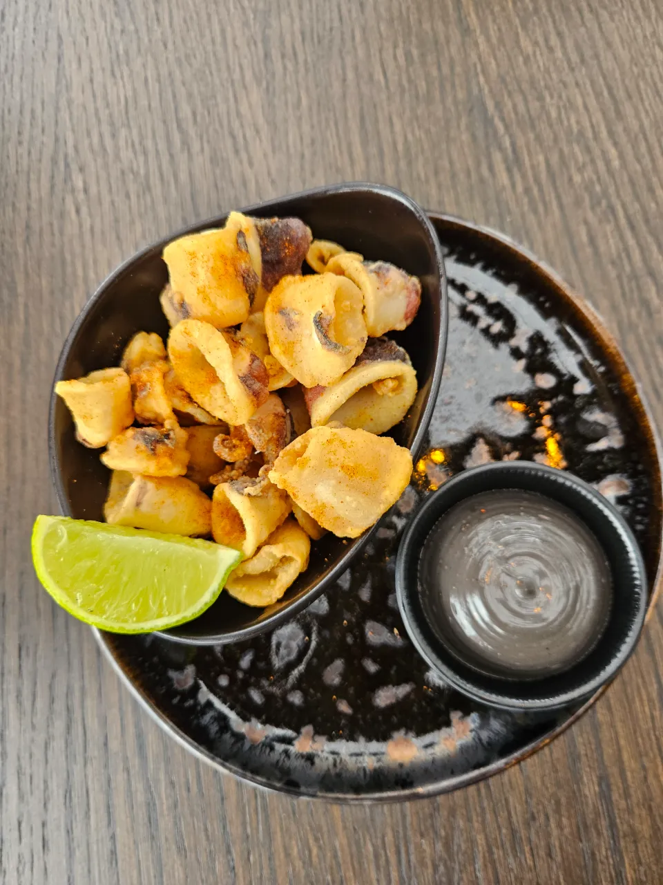
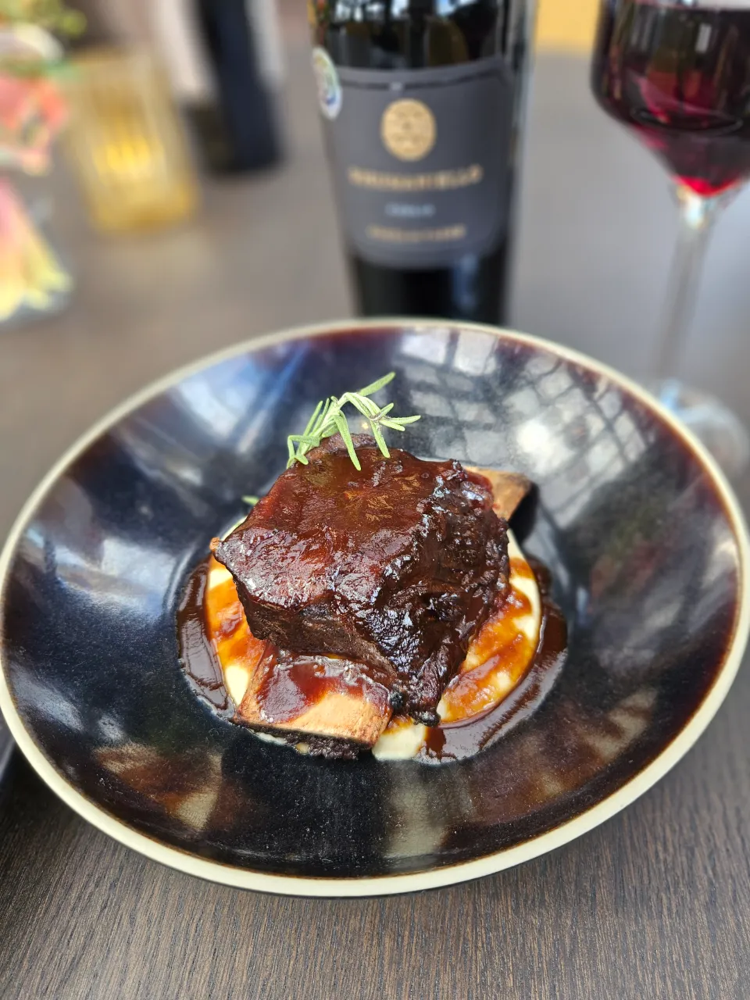
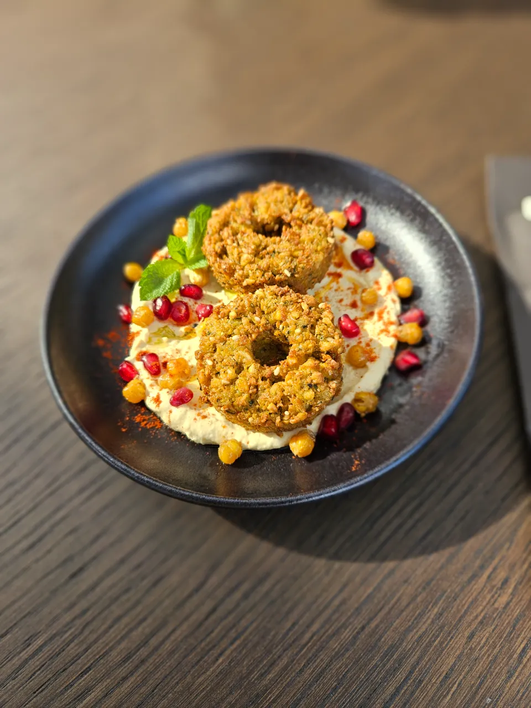
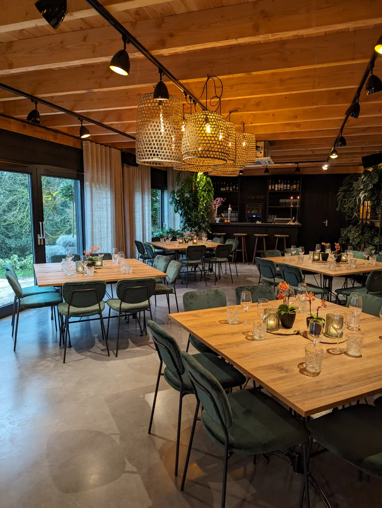
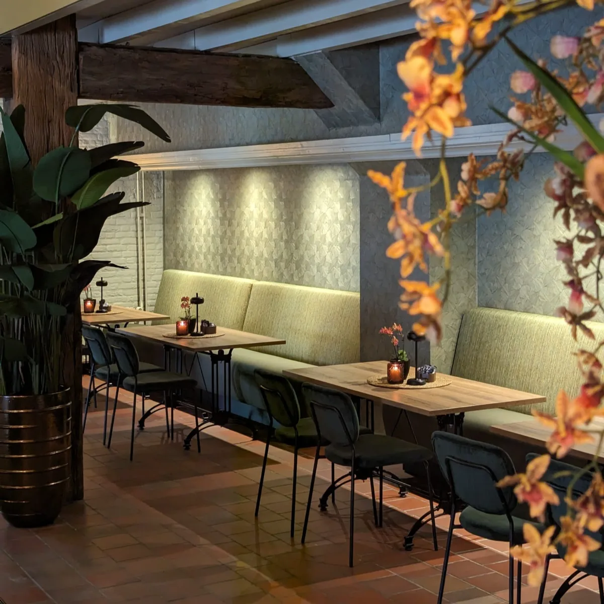
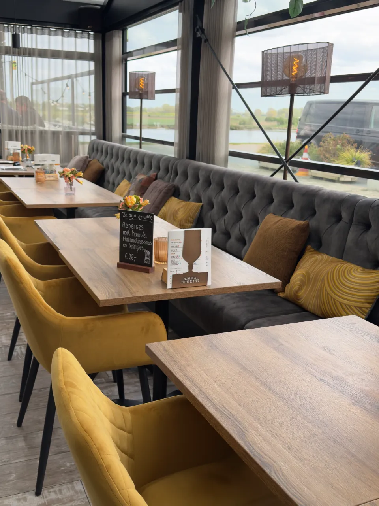
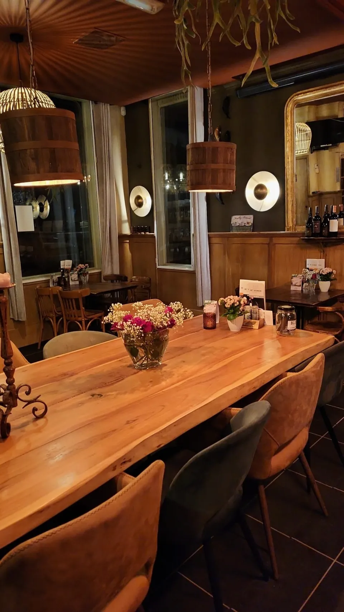

Een kop koffie halen, op je gemak de krant lezen of een praatje maken?
Een hapje eten bij lunchtijd, of genieten van ons diner?
Een Speciale Henky drinken, of een van de andere Henky's?
Na een wandeling, met of zonder hond, uitrusten met een hapje en een drankje?
Even je fiets opladen als je er toch bent?
Of gewoon naar het uitzicht over de Maas staren. Gewoon omdat het kan.
Het Veerhuis ligt landelijk aan de Maasdijk in Bokhoven, met een panoramisch uitzicht over de rivier en de uiterwaarden. Buiten zitten kan zonder reservering: we hebben veel plek.
Vanaf de opening
Koffie
Begin de dag met koffie en huisgemaakte appeltaart, dagelijks vers gebakken.
11.30 – 15.00
Lunch
Soep, kroketten, tosti's, salades en regelmatig een lunchspecial.
Vanaf 16.00
Shared dining
Kleinere gerechten om samen te delen. Diner van woensdag tot en met zondag.
Op het terras of in het café
Borrel
Fris, een borrel en een hap, met bitterballen of een Spaanse plank.
Tot 150 personen
Feest
Vier zalen voor feesten, vergaderingen, besloten borrels en afscheid.



De kaart
Onze kaart voor herfst en winter. Allergieën of een dieet? Vraag naar de allergenenkaart, dan helpen we je graag.
Lunch serveren we van 11.30 tot 15.00 uur.
Soep & brood
TomatensoepHuisgemaakt, eventueel met rundvleesballetjes6,50
GehaktballenMini gehaktballen in rijke jus op zuurdesembrood13,90
KrokettenTwee ambachtelijke rundvleeskroketten op vers brood met sla14,50
Vegan kroketten16,20
Kroket7,30
Vegan kroket8,10
CachopoRunderschnitzel met ham en kaas, friet en salade13,50
Brood met zalm en tonijnTwee boterhammen met tonijnsalade, verse zalm, rode ui, roomkaas, rucola, cherrytomaatjes en kappertjes20,00
Twaalfuurtjes
Twaalf uurtjeKroket, uitsmijter ham en kaas op brood, tomatensoep en sla17,00
Twaalf uurtje veganVegan kroket, vers brood met hummus, geroosterde paprika, tomatensoep en pittenmix20,00
Salades
Bloemkoolsalade19,00
Salade geitenkaas17,00
Salade gamba en buikspekAl lange tijd favoriet23,00
Uitsmijters
Spek en kaas14,50
Ham en kaas14,00
Ham10,50
Kaas11,50
Tosti's
Tosti van kok DavidZoute ham, spek, kaas en chipotle mayonaise12,50
Tosti geitenkaasMet pittenmix en honing7,00
Tosti ham en kaas8,50
Tosti kaas7,00
Vanaf 16.00 uur bestel je kleinere gerechten om samen te delen. Kies er een paar per persoon en laat ze rondgaan. Brood en smeersels vind je onder Borrel & brood.
Vlees
Cheeseburger23,00
Short ribsIn wijnsaus · lekker met een Hi-Ha Henky18,50
TournedosMet pepersaus en knolselderijpuree17,00
Aziatische carpaccio13,50
Entrecote120 gram, met paprika-portsaus16,50
Gyoza mixKip en vegetarisch, met hoisinsaus · lekker met een Calpis8,80
Argentijnse empanada'sMet gehakt, recept van sous-chef Patricio8,50
Krokante honing kip8,50
Vis
Kabeljauw15,00
Tonijn tostada14,00
Salade gamba en buikspek11,50
Gebakken calamari8,00
Gamba pil pil9,00
Vega(n)
Vegan burger17,00
Gebakken aubergineEen aanrader13,00
Truffel zoete aardappel10,50
Truffelfriet9,00
AuberginelasagneVan kok Mark9,50
Argentijnse empanada's caprese8,50
Bloemkoolsalade9,00
Salade geitenkaas8,00
Gyoza groente8,50
Falafel8,00
Oesterzwam7,00
Authentieke fried rice7,00
Huisgemaakte tomatensoep6,40
Bijgerechten
Gegrilde aardappelen7,00
Zoete aardappel (friet)6,50
Aardappel scoops6,00
Edamame5,00
Friet5,00
Rijst4,50
Frisse salade3,50
Sauzen
Truffelmayonaise3,50
Ketchup1,50
Satésaus1,50
Mayonaise1,00
Curry1,00
Mosterd1,00
Desserts
Ménage à trois12,00
Dame blanche11,30
MaiscakeWarm, met chocolade-ijs en slagroom9,00
Macaron ijs8,00
SorbetDrakenfruit- en pornstar martini-ijs7,50
Vanille-ijs met sojakaramel7,00
KinderijsSmurfenijs met slagroom en marshmallows6,00
Met een groep uit eten? Vanaf 10 personen kies je met de hele groep één van deze drie shared dining-menu's: drie rondes, negen gerechten om te delen. Reserveer via info@hetveerhuisbokhoven.nl of 073 631 1242.
Feest, vergadering, besloten borrel of een waardig afscheid
Vier ruimtes, van een gezellige opkamer tot een zaal voor 150 gasten, en een ruime keuze aan arrangementen. Kom langs voor een persoonlijk gesprek of laat ons een offerte op maat maken.

tot 100personen
Tuinkamer
Met een glazen pui en zicht op de tuin. Te verbinden met de Grote zaal.

tot 150personen
Grote zaal
Voor feesten, jubilea en afscheid.

tot 80personen
Serre
Licht en open, met uitzicht over de Maas.

tot 35personen
Café
Met opkamer, voor een besloten borrel.
Waarvoor je bij ons terecht kunt
Kerst- of nieuwjaarsborrelMet kantoor, team of vereniging.
Met familie of vriendenEen feest, of een besloten lunch, diner of borrel.
AfscheidZorgvuldig en persoonlijk geregeld. Vraag naar onze folder.
Vergadering of presentatieMet apparatuur, en lunch, borrel of hapjes erbij.
Nieuw
Zaalhuurvoordeel tot 100%
Last minute 10% kortingop de arrangementsprijs
“Verjaardag gevierd, van A tot Z in de watten gelegd en zeer vriendelijk en behulpzaam personeel.”
Gast
“Bijzonder goed gedaan, goed geregeld, we kijken terug op een mooi en dankbaar afscheid, grote dank!!”
De oude gemeente Bokhoven, tussen de Maas en 's-Hertogenbosch.
Onze reis
Al ruim honderd jaar is het Veerhuis een begrip. Van traditioneel Brabants café groeide het naar een plek voor koffie, lunch, diner en zaalverhuur, aan de fietsroute langs de Maas.
1874
Het pand wordt gebouwd: een cultuurhistorische boerderij aan de Maasdijk.
Vier generaties
Het café blijft in de familie Van der Leeden: Antonius, Drieske, Jos en Johan. Dina van der Leeden-van Son stond 59 jaar in het café.
1995
Door het hoogwater wordt Bokhoven geëvacueerd.
1998
De dijk wordt 80 centimeter verhoogd. Daarom ligt het café sindsdien niet meer gelijkvloers.
2023
Johan stopt na 34 jaar. Sjef Pijnenburg, opgegroeid in Bokhoven uit een familie die er al 400 jaar woont, en Diana Clarck nemen het Veerhuis over.
Nu
De buurtfunctie blijft, en het Veerhuis wordt nog mooier: het café wordt op dit moment verfraaid. Sinds 1 oktober serveren we shared dining.
Bokhoven, aan de Maas
Bokhoven is een rustig, kleinschalig dorp bij 's-Hertogenbosch. Tot de Franse Revolutie was het een eigen Heerlijkheid. In september trekt de bedevaart naar Sint Cornelius door het dorp, en elk jaar is er de Heksenmarkt.
Vanaf ons terras kijk je uit over de Maas en de uiterwaarden. Een mooie plek om te stoppen tijdens een wandeling of fietstocht.
Groot terras, zonder reservering
Aanlegsteiger voor boottochten en pleziervaart
Ruime eigen parkeerplaats
Fiets opladen kan bij ons
Ontdek Heusden en de route langs de Maas
De kastelen van de Haverleij in Engelen
Word Vriend van het Veerhuis
Aanmelden voor onze nieuwsbrief is gratis. Als Vriend:
spaar je voor korting
maak je elke maand kans op een cadeaukaart van € 50
We zoeken collega's voor de keuken en de bediening. Flexibel, ook voor een paar uur per week naast je opleiding. Mail je gegevens, leeftijd en ervaring, of kom gewoon even langs.